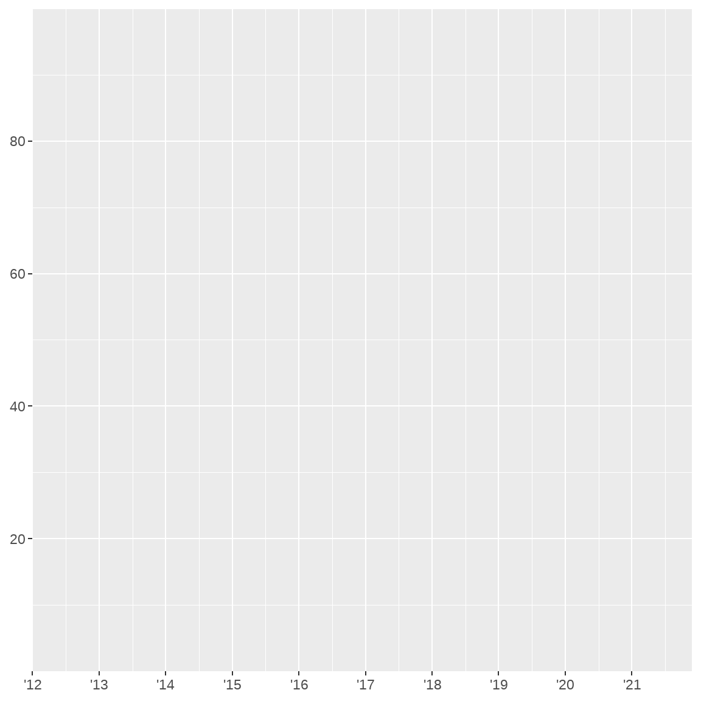
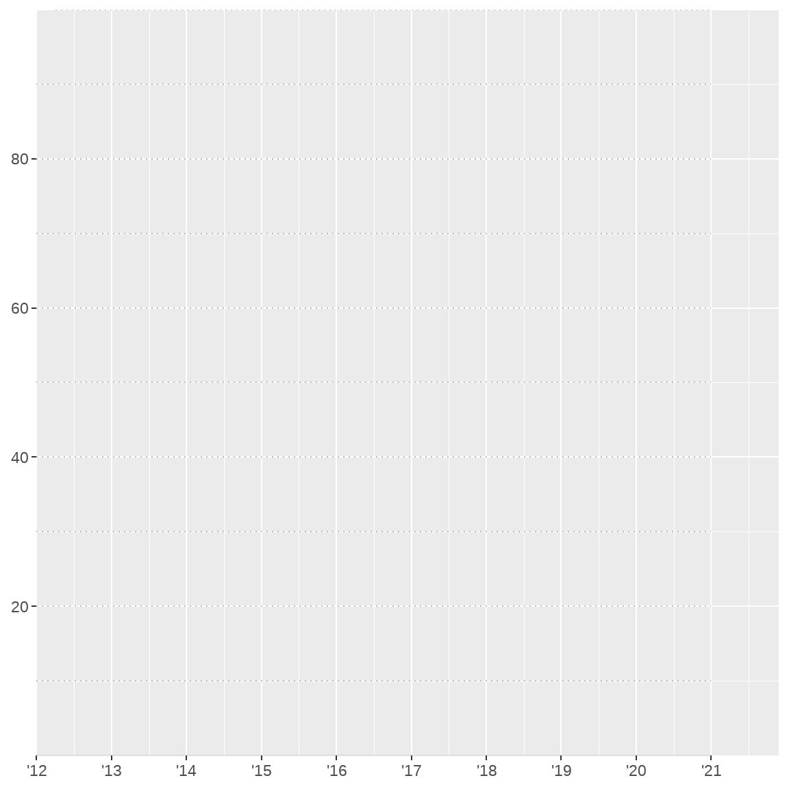
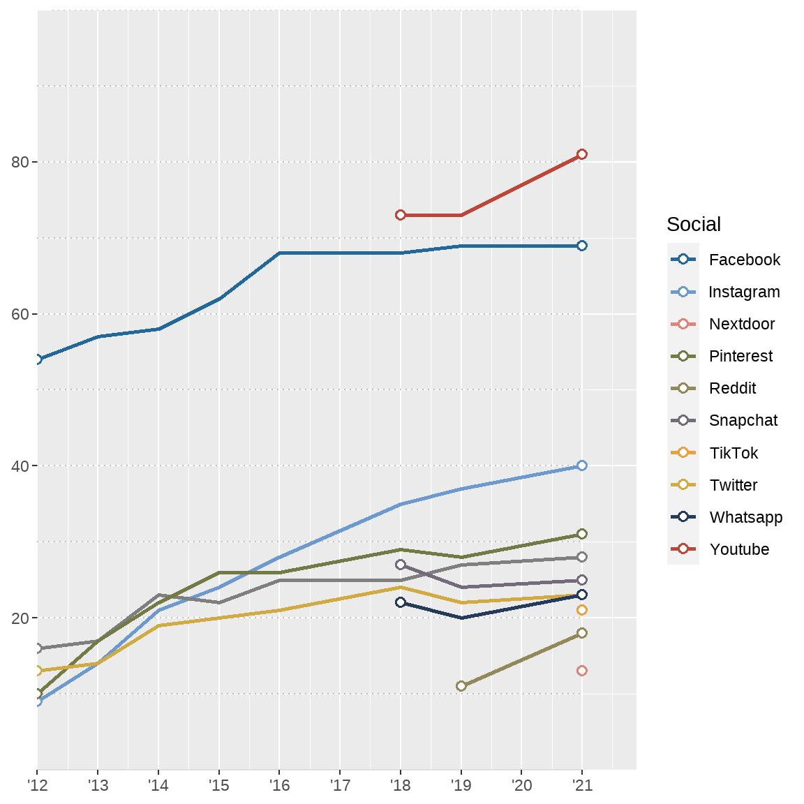
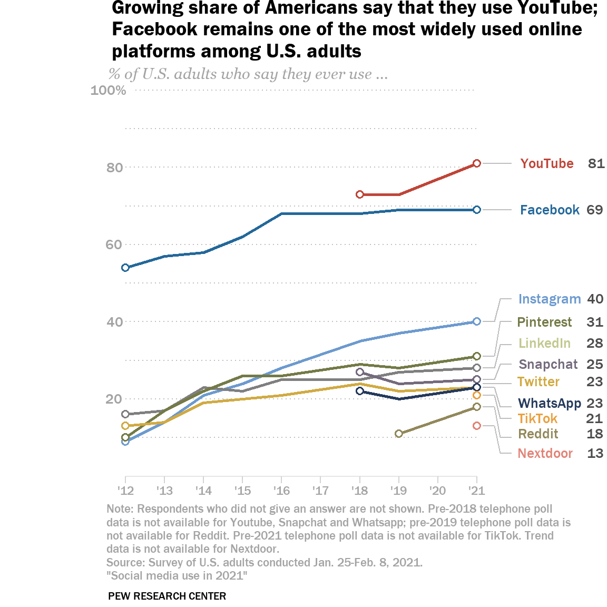
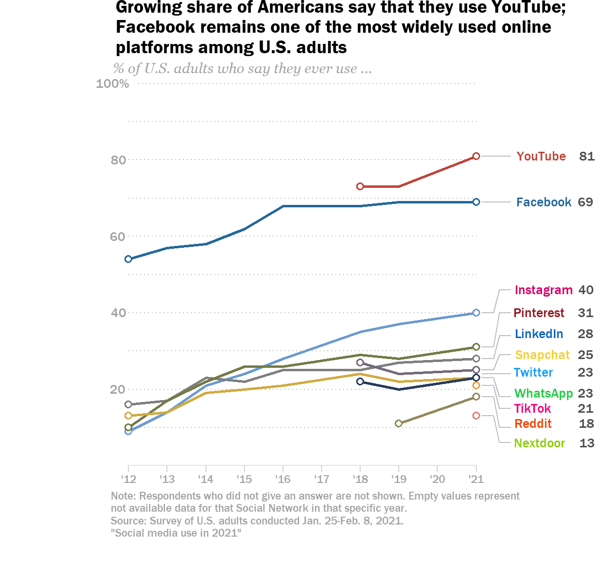
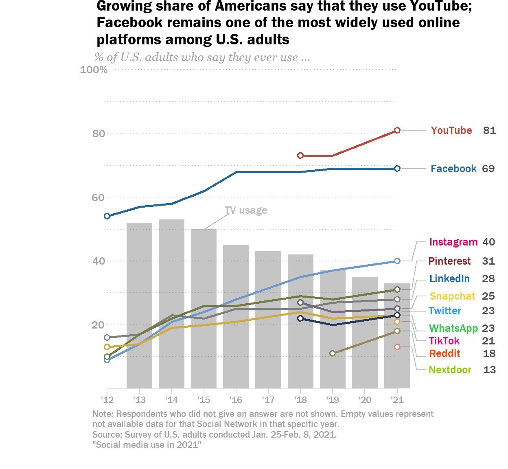
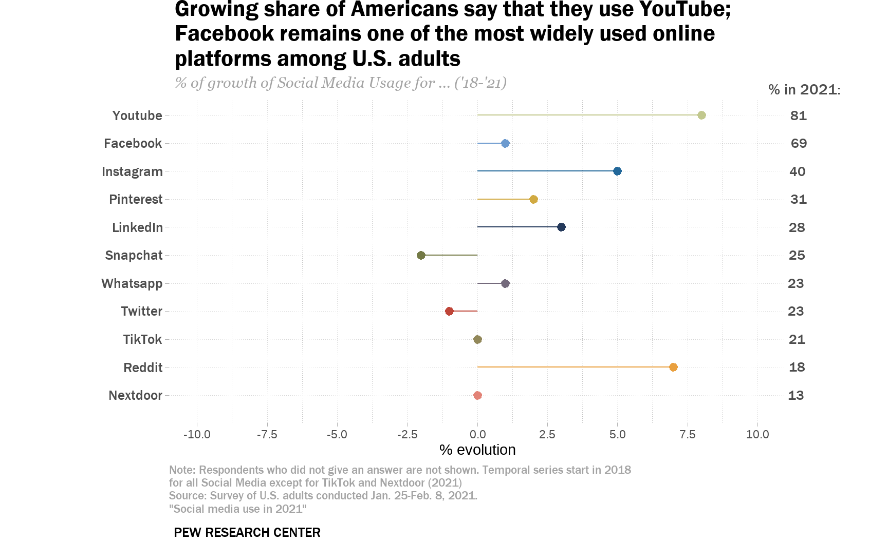

About the graph
Brooke Auxier and Monica Anderson published an article in the Pew Research Center in which they analyzed Social Media Use in 2021 for the Northamerican context, through data collected by the same organization and depicted by them in several graphs. One of them, the objective of this project, visually presents the evolution of use of eleven Social Networks since 2012 (although only 5 of them have available data for the whole time series).

With it, their objective was to show how despite all controversies and negative feelings towards them, a majority of Northamericans still use at least one, and how their usage has increased through the last years. The goal of this project is to replicate the plot as closely as possible and to offer feasible enhancements and alternative visualizations.
Plot construction
Initial settings, getting the data
First of all, we should load into R the necessary libraries to develop our work. In our case, we need the following three:
Once we prepared our environment, it’s time for us to work with the data. In this case, the Pew Research Center uploaded a PDF file with the specific questions and answers used for the report, from which we created a CSV file. We anticipated our future needs and introduced the different variables in a long format, as we would later need it to develop the plot.
read_delim("Data/database.csv")# A tibble: 53 × 3
Year `Social media` Use
<dbl> <chr> <dbl>
1 2012 Twitter 13
2 2013 Twitter 14
3 2014 Twitter 19
4 2015 Twitter 20
5 2016 Twitter 21
6 2018 Twitter 24
7 2019 Twitter 22
8 2021 Twitter 23
9 2012 Instagram 9
10 2013 Instagram 14
# … with 43 more rowsSo, we store our CSV file as a dataframe, also renaming the ‘Social media’ variable into just ‘Social’ for simplicity purposes. Additionally, we filter the first and last data values for each Social Network into another dataframe, as we later will need it to display the points in each side of the lines.
Font preparation and color setting
In this step, we start by adding into our document the fonts used by the authors. Note that we included the same font two times, the regular and the bold version; this is because we had some issues while trying to compute the bold aspect manually (with double asterisk at each side of the text).
font_add(family = "Franklin Gothic", regular = "FRAMD.ttf")
font_add(family = "Franklin Gothic Demi", regular = "FRADM.ttf")
font_add(family = "Georgia", regular = "GEORGIAI.ttf")
showtext_auto()Then, we create a vector assigning each possible Social Network to its displayed color in the graph, to then apply it to the lines setting.
colors <- c("Youtube" = "#bf4538", "Facebook" = "#23689a",
"Instagram" = "#6c9acf", "Pinterest" = "#747a46",
"Linkedin" = "#c2c88e", "Snapchat" = "#746a7c",
"Twitter" = "#d1aa42", "Whatsapp" = "#253a5c",
"TikTok" = "#e9a03f", "Reddit" = "#92885a",
"Nextdoor" = "#e28377" )Coordinates, axes and scales
Our panel base depends on two axis, years and usage rate (%).
Previous to mapping the data inside the plot, we need to set properly the labels, axes and scales.
p <- p +
scale_x_continuous(
name = NULL,
limits=c(2012, 2021.9),
n.breaks = 10,
labels = function(x) paste0("'", substr(x, 3, 4)),
expand=c(0,0)
) +
scale_y_continuous(
name = NULL,
limits=c(0, 100),
breaks = c(20, 40, 60, 80),
labels = c("20" = "20", "40" = "40", "60" = "60", "80" = "80"),
expand = c(0,0)
)
p
Now, the first year is ‘12, just as the original plot, and we’ve set the y limits to 100%. We didn’t add the last vertical label, “100%”: this is because it’s placed slightly to the right, as the top grid is shorter than the rest, so we’ll later set it as an individual annotation. We can also check how the x axis doesn’t ’strictly’ end in ’21: this is because we’ve left some space to connect the last values to their labels through segments.
One characteristic aspect of this graphic is that it requires a lot of annotations in order to display its elements correctly. As our first one, we’ll set the grid lines (although we’ll not see them properly until applying the theme). The reason behind this is to avoid them extending 2021 when we leave space to connect the last points of data with the labels.
p <- p +
annotate("segment", x=2012, xend = 2021, y=10, yend=10,
color = "grey", linetype="dotted") +
annotate("segment", x=2012, xend = 2021, y=20, yend=20,
color = "grey", linetype="dotted") +
annotate("segment", x=2012, xend = 2021, y=30, yend=30,
color = "grey", linetype="dotted") +
annotate("segment", x=2012, xend = 2021, y=40, yend=40,
color = "grey", linetype="dotted") +
annotate("segment", x=2012, xend = 2021, y=50, yend=50,
color = "grey", linetype="dotted") +
annotate("segment", x=2012, xend = 2021, y=60, yend=60,
color = "grey", linetype="dotted") +
annotate("segment", x=2012, xend = 2021, y=70, yend=70,
color = "grey", linetype="dotted") +
annotate("segment", x=2012, xend = 2021, y=80, yend=80,
color = "grey", linetype="dotted") +
annotate("segment", x=2012, xend = 2021, y=90, yend=90,
color = "grey", linetype="dotted") +
annotate("segment", x=2012.25, xend = 2021, y=100, yend=100,
color = "grey", linetype="dotted") +
annotate("segment", x=2012, xend = 2021, y=0, yend=0,
color = "grey", alpha = 0.4)
p
Adding the data
Now that we’ve prepared the plot’s ‘skeleton’, it’s time for us to add the data. It’s important to do it after adding the grid annotations: if not, they would overlap the geom_line().
p <- p + geom_line(aes(group=Social, color=Social), linewidth= 1) +
geom_point(data = filtered, aes(color=Social),
size = 1.75, shape = 21, fill="white", stroke = 1) +
scale_color_manual(values = colors)
p
Theme settings
We’ll now prepare the theme for previous and further changes. As seen in the original image, the background and plot margins are all white, vertical grid lines are not displayed, there are some margins we need to adjust at the right (to leave space for the labels and values) and at the bottom (to leave space for the last caption, “PEW RESEARCH CENTER”) and there are no axis ticks but for the years. Another important aspect is that the default legend is not included: we will create it manually as a kind of secondary axis, with side annotations.
p <- p +
theme(
axis.ticks.x.bottom = element_line(color = "lightgrey"),
panel.grid.major.y = element_line(colour = "transparent"),
panel.grid.minor.y = element_line(colour = "transparent"),
panel.background = element_rect(fill = "transparent"),
legend.position = "none",
axis.text.x.bottom = element_text(color="grey64",
family = "Franklin Gothic"),
axis.text.y.left = element_text(color="grey64",
family = "Franklin Gothic", hjust=-0.5, size=10),
axis.line.x.bottom = element_line(color="transparent"),
axis.ticks.length = unit(0, "pt"),
axis.ticks.length.x.bottom = unit(5, "pt"),
plot.caption = element_text(family = "Franklin Gothic",
color = "grey64", hjust = 0),
plot.caption.position = "plot",
aspect.ratio = 1.1,
plot.subtitle = element_text(family = "Georgia",
color = "grey64", hjust = 0.02, size=11),
plot.title = element_text(family = "Franklin Gothic Demi", hjust = 0, size=14.4),
plot.title.position = "plot",
plot.margin = margin(t=0,
r=17,
b=18,
l=0)
) +
annotate("text", label="100%", x=2012, y=100, color = "grey64",
family="Franklin Gothic", size=3.5, hjust=1) +
coord_fixed(xlim=c(2012,2021), clip = 'off')
pWe also delete the previous grids and set the correct text settings, along with the “100% annotation” (it will display correctly after adding the title and subtitle) and a fixed coordinate system ending in 2021 (with clip = ‘off’ to allow us to annotate outside the plot limits).
Our next step is to set the title, subtitle, caption and bottom annotation (this last one acting as a tag, but avoiding some placement problems). Note that now the plot space is complete and the “100%” mark does not appear as cut in half.
p <- p +
labs(title = paste(" Growing share of Americans say that they use YouTube;\n",
"Facebook remains one of the most widely used online\n",
"platforms among U.S. adults"),
subtitle = "% of U.S. adults who say they ever use ...",
caption = paste("Note: Respondents who did not give an answer are not shown. Pre-2018 telephone poll",
"data is not available for Youtube, Snapchat and Whatsapp; pre-2019 telephone poll data is",
"not available for Reddit. Pre-2021 telephone poll data is not available for TikTok. Trend",
"data is not available for Nextdoor.",
"Source: Survey of U.S. adults conducted Jan. 25-Feb. 8, 2021.",
'"Social media use in 2021"', sep="\n")) +
annotate("text", label= "PEW RESEARCH CENTER", x=2012, y=0, vjust=16.5,
hjust=0.15, family = "Franklin Gothic", size=2.8)
pbase <- p
pAdding side annotations and last values
As we previously mentioned, the legend in this plot is substituted by side annotations with the last value for each series. We manually set their position, using horizontal and vertical adjustments.
p <- p +
annotate("text", label="YouTube", y=81, x=2021, hjust=-0.8, size=3.5,
family = "Franklin Gothic", color = "#bf4538") +
annotate("text", label="Facebook", y=69, x=2021, hjust=-0.73, size=3.5,
family = "Franklin Gothic", color = "#23689a") +
annotate("text", label="Instagram", y=46, x=2021, hjust=-0.68, size=3.5,
family = "Franklin Gothic", color = "#6c9acf") +
annotate("text", label="Pinterest", y=40, x=2021, hjust=-0.75, size=3.5,
family = "Franklin Gothic", color = "#747a46") +
annotate("text", label="LinkedIn", y=34.5, x=2021, hjust=-0.82, size=3.5,
family = "Franklin Gothic", color = "#c2c88e") +
annotate("text", label="Snapchat", y=29, x=2021, hjust=-0.72, size=3.5,
family = "Franklin Gothic", color = "#746a7c") +
annotate("text", label="Twitter", y=24.5, x=2021, hjust=-0.96, size=3.5,
family = "Franklin Gothic", color = "#d1aa42") +
annotate("text", label="WhatsApp", y=19, x=2021, hjust=-0.65, size=3.5,
family = "Franklin Gothic", color = "#253a5c") +
annotate("text", label="TikTok", y=15, x=2021, hjust=-1.03, size=3.5,
family = "Franklin Gothic", color = "#e9a03f") +
annotate("text", label="Reddit", y=11, x=2021, hjust=-1.05, size=3.5,
family = "Franklin Gothic", color = "#92885a") +
annotate("text", label="Nextdoor", y=6, x=2021, hjust=-0.75, size=3.5,
family = "Franklin Gothic", color = "#e28377") +
annotate("text", label="81", y=81, x=2021, hjust=-6.6, size=3.5,
family = "Franklin Gothic", color="gray30") +
annotate("text", label="69", y=69, x=2021, hjust=-6.95, size=3.5,
family = "Franklin Gothic",color="gray30") +
annotate("text", label="40", y=46, x=2021, hjust=-6.75, size=3.5,
family = "Franklin Gothic",color="gray30") +
annotate("text", label="31", y=40, x=2021, hjust=-6.5, size=3.5,
family = "Franklin Gothic",color="gray30") +
annotate("text", label="28", y=34.5, x=2021, hjust=-6.75, size=3.5,
family = "Franklin Gothic",color="gray30") +
annotate("text", label="25", y=29, x=2021, hjust=-6.75, size=3.5,
family = "Franklin Gothic",color="gray30") +
annotate("text", label="23", y=24.5, x=2021, hjust=-6.95, size=3.5,
family = "Franklin Gothic",color="gray30") +
annotate("text", label="23", y=19, x=2021, hjust=-6.95, size=3.5,
family = "Franklin Gothic",color="gray30") +
annotate("text", label="21", y=15, x=2021, hjust=-6.7, size=3.5,
family = "Franklin Gothic",color="gray30") +
annotate("text", label="18", y=11, x=2021, hjust=-6.75, size=3.5,
family = "Franklin Gothic",color="gray30") +
annotate("text", label="13", y=6, x=2021, hjust=-7, size=3.5,
family = "Franklin Gothic",color="gray30")
p
And finally, we set the lines that join each last point with its Social Network, using the expanded limits we set a few steps ago and also manually adjusting their position via hjust and vjust.
p <- p +
#YouTube
annotate("segment", x=2021.15, xend= 2021.9, y=81, yend=81, color="grey") +
#Facebook
annotate("segment", x=2021.15, xend= 2021.9, y=69, yend=69, color="grey") +
#Instagram
annotate("segment", x=2021.15, xend= 2021.45, y=40, yend=40, color="grey") +
annotate("segment", x=2021.45, xend= 2021.6, y=40, yend=46, color="grey") +
annotate("segment", x=2021.6, xend= 2021.9, y=46, yend=46, color="grey") +
#Pinterest
annotate("segment", x=2021.15, xend= 2021.45, y=31, yend=31, color="grey") +
annotate("segment", x=2021.45, xend= 2021.6, y=31, yend=40, color="grey") +
annotate("segment", x=2021.6, xend= 2021.9, y=40, yend=40, color="grey") +
#LinkedIn
annotate("segment", x=2021.15, xend= 2021.45, y=28, yend=28, color="grey") +
annotate("segment", x=2021.45, xend= 2021.6, y=28, yend=34, color="grey") +
annotate("segment", x=2021.6, xend= 2021.9, y=34, yend=34, color="grey") +
#Snapchat
annotate("segment", x=2021.15, xend= 2021.45, y=25, yend=25, color="grey") +
annotate("segment", x=2021.45, xend= 2021.6, y=25, yend=29, color="grey") +
annotate("segment", x=2021.6, xend= 2021.9, y=29, yend=29, color="grey") +
#Twitter
annotate("segment", x=2021.15, xend= 2021.9, y=24, yend=24, color="grey") +
#Whatsapp
annotate("segment", x=2021.15, xend= 2021.45, y=23, yend=23, color="grey") +
annotate("segment", x=2021.45, xend= 2021.6, y=23, yend=18, color="grey") +
annotate("segment", x=2021.6, xend= 2021.9, y=18, yend=18, color="grey") +
#TikTok
annotate("segment", x=2021.15, xend= 2021.45, y=21, yend=21, color="grey") +
annotate("segment", x=2021.45, xend= 2021.6, y=21, yend=15, color="grey") +
annotate("segment", x=2021.6, xend= 2021.9, y=15, yend=15, color="grey") +
#Reddit
annotate("segment", x=2021.15, xend= 2021.45, y=18, yend=18, color="grey") +
annotate("segment", x=2021.45, xend= 2021.6, y=18, yend=10, color="grey") +
annotate("segment", x=2021.6, xend= 2021.9, y=10, yend=10, color="grey") +
#Nextdoor
annotate("segment", x=2021.15, xend= 2021.45, y=13, yend=13, color="grey") +
annotate("segment", x=2021.45, xend= 2021.6, y=13, yend=6, color="grey") +
annotate("segment", x=2021.6, xend= 2021.9, y=6, yend=6, color="grey")
p
Enhancements and alternative visualizations
Possible changes in the plot
When looking at the graph by Auxier and Anderson, the first thing that can come to our minds is that, although the evolution through the last 9 year appears to be clear, the discriminability could be better. There are categories with the same color as others, and the distribution seems to be only ‘reasonable’ for the top two Social Networks, YouTube and Facebook, as they are depicted with their corporative colors. This is specially problematic if we take a look at the mid-bottom part of the chart, which compiles a lot of values very close to each other, resulting into some potential confusion at identifying each line or point with their respective category.
Another way of improving each category’s identification with the lines could be expanding the plot margins a little bit to the bottom, to avoid the excessive proximity between points that also results into very close reference lines, but we didn’t attempt to do it because excessive height for temporal series plots may distort the evolution shown, making it too difficult to visually see.
p <- pbase +
geom_line(aes(group=Social, color=Social), linewidth= 1) +
geom_point(data = filtered, aes(color=Social),
size = 1.75, shape = 21, fill="white", stroke = 1) +
annotate("text", label="YouTube", y=81, x=2021, hjust=-0.8, size=3.5,
family = "Franklin Gothic", color = "#bf4538") +
annotate("text", label="Facebook", y=69, x=2021, hjust=-0.73, size=3.5,
family = "Franklin Gothic", color = "#23689a") +
annotate("text", label="Instagram", y=46, x=2021, hjust=-0.68, size=3.5,
family = "Franklin Gothic", color = "#d50167") +
annotate("text", label="Pinterest", y=40, x=2021, hjust=-0.75, size=3.5,
family = "Franklin Gothic", color = "#911821") +
annotate("text", label="LinkedIn", y=34.5, x=2021, hjust=-0.82, size=3.5,
family = "Franklin Gothic", color = "#0a63bc") +
annotate("text", label="Snapchat", y=29, x=2021, hjust=-0.72, size=3.5,
family = "Franklin Gothic", color = "#f7ce2c") +
annotate("text", label="Twitter", y=24.5, x=2021, hjust=-0.96, size=3.5,
family = "Franklin Gothic", color = "#189ef3") +
annotate("text", label="WhatsApp", y=19, x=2021, hjust=-0.65, size=3.5,
family = "Franklin Gothic", color = "#25ca45") +
annotate("text", label="TikTok", y=15, x=2021, hjust=-1.03, size=3.5,
family = "Franklin Gothic", color = "#f70079") +
annotate("text", label="Reddit", y=11, x=2021, hjust=-1.05, size=3.5,
family = "Franklin Gothic", color = "#f74301") +
annotate("text", label="Nextdoor", y=6, x=2021, hjust=-0.75, size=3.5,
family = "Franklin Gothic", color = "#8ace00") +
labs(title = paste(" Growing share of Americans say that they use YouTube;\n",
"Facebook remains one of the most widely used online\n",
"platforms among U.S. adults"),
subtitle = "% of U.S. adults who say they ever use ...",
caption = paste("Note: Respondents who did not give an answer are not shown. Empty values represent",
"not available data for that Social Network in that specific year.",
"Source: Survey of U.S. adults conducted Jan. 25-Feb. 8, 2021.",
'"Social media use in 2021"', sep="\n")) +
#YouTube
annotate("segment", x=2021.15, xend= 2021.9, y=81, yend=81, color="grey") +
#Facebook
annotate("segment", x=2021.15, xend= 2021.9, y=69, yend=69, color="grey") +
#Instagram
annotate("segment", x=2021.15, xend= 2021.45, y=40, yend=40, color="grey") +
annotate("segment", x=2021.45, xend= 2021.6, y=40, yend=46, color="grey") +
annotate("segment", x=2021.6, xend= 2021.9, y=46, yend=46, color="grey") +
#Pinterest
annotate("segment", x=2021.15, xend= 2021.45, y=31, yend=31, color="grey") +
annotate("segment", x=2021.45, xend= 2021.6, y=31, yend=40, color="grey") +
annotate("segment", x=2021.6, xend= 2021.9, y=40, yend=40, color="grey") +
#LinkedIn
annotate("segment", x=2021.15, xend= 2021.45, y=28, yend=28, color="grey") +
annotate("segment", x=2021.45, xend= 2021.6, y=28, yend=34, color="grey") +
annotate("segment", x=2021.6, xend= 2021.9, y=34, yend=34, color="grey") +
#Snapchat
annotate("segment", x=2021.15, xend= 2021.45, y=25, yend=25, color="grey") +
annotate("segment", x=2021.45, xend= 2021.6, y=25, yend=29, color="grey") +
annotate("segment", x=2021.6, xend= 2021.9, y=29, yend=29, color="grey") +
#Twitter
annotate("segment", x=2021.15, xend= 2021.9, y=24, yend=24, color="grey") +
#Whatsapp
annotate("segment", x=2021.15, xend= 2021.45, y=23, yend=23, color="grey") +
annotate("segment", x=2021.45, xend= 2021.6, y=23, yend=18, color="grey") +
annotate("segment", x=2021.6, xend= 2021.9, y=18, yend=18, color="grey") +
#TikTok
annotate("segment", x=2021.15, xend= 2021.45, y=21, yend=21, color="grey") +
annotate("segment", x=2021.45, xend= 2021.6, y=21, yend=15, color="grey") +
annotate("segment", x=2021.6, xend= 2021.9, y=15, yend=15, color="grey") +
#Reddit
annotate("segment", x=2021.15, xend= 2021.45, y=18, yend=18, color="grey") +
annotate("segment", x=2021.45, xend= 2021.6, y=18, yend=10, color="grey") +
annotate("segment", x=2021.6, xend= 2021.9, y=10, yend=10, color="grey") +
#Nextdoor
annotate("segment", x=2021.15, xend= 2021.45, y=13, yend=13, color="grey") +
annotate("segment", x=2021.45, xend= 2021.6, y=13, yend=6, color="grey") +
annotate("segment", x=2021.6, xend= 2021.9, y=6, yend=6, color="grey") +
annotate("text", label="81", y=81, x=2021, hjust=-6.6, size=3.5,
family = "Franklin Gothic", color="gray30") +
annotate("text", label="69", y=69, x=2021, hjust=-6.95, size=3.5,
family = "Franklin Gothic",color="gray30") +
annotate("text", label="40", y=46, x=2021, hjust=-6.75, size=3.5,
family = "Franklin Gothic",color="gray30") +
annotate("text", label="31", y=40, x=2021, hjust=-6.5, size=3.5,
family = "Franklin Gothic",color="gray30") +
annotate("text", label="28", y=34.5, x=2021, hjust=-6.75, size=3.5,
family = "Franklin Gothic",color="gray30") +
annotate("text", label="25", y=29, x=2021, hjust=-6.75, size=3.5,
family = "Franklin Gothic",color="gray30") +
annotate("text", label="23", y=24.5, x=2021, hjust=-6.95, size=3.5,
family = "Franklin Gothic",color="gray30") +
annotate("text", label="23", y=19, x=2021, hjust=-6.95, size=3.5,
family = "Franklin Gothic",color="gray30") +
annotate("text", label="21", y=15, x=2021, hjust=-6.75, size=3.5,
family = "Franklin Gothic",color="gray30") +
annotate("text", label="18", y=11, x=2021, hjust=-6.8, size=3.5,
family = "Franklin Gothic",color="gray30") +
annotate("text", label="13", y=6, x=2021, hjust=-7.05, size=3.5,
family = "Franklin Gothic",color="gray30")
p
We also abbreviated the plot’s note, only mentioning that not shown data is not available and reducing the total amount of text shown in the graph.
One of the article’s objectives was to show that although there is a certain degree of negative feelings towards social media, a high percentage of the Northamerican population still uses at least one. If we added some context underneath the evolution lines, that also showed evolution of other types of media (TV, Newspaper, Radio…), the viewer could easily contextualize the information, while making the graph richer. We understand this is a limitation of the used data, but they could use some alternative surveys also indicating in the caption that it comes from a different source.
Let’s make some fictitious data in our CSV, adding TV usage, in order to see how it would look:
read_delim("Data/database2.csv") %>%
rename(
"Social" = `Social media`
) %>%
filter(Social=="TV")# A tibble: 10 × 3
Year Social Use
<dbl> <chr> <dbl>
1 2012 TV 54
2 2013 TV 52
3 2014 TV 53
4 2015 TV 50
5 2016 TV 45
6 2017 TV 43
7 2018 TV 42
8 2019 TV 37
9 2020 TV 35
10 2021 TV 33TV <- read_delim("Data/database2.csv") %>%
rename(
"Social" = `Social media`
) %>%
filter(Social=="TV")p <- p +
geom_col(data = TV, aes(Year, Use), alpha=0.35, width = 0.8) +
geom_line(aes(group=Social, color=Social), linewidth= 1) +
geom_point(data = filtered, aes(color=Social),
size = 1.75, shape = 21, fill="white", stroke = 1) +
annotate("text", label="TV usage", x=2016.3, y=56, color="grey",
size = 3.5, family = "Franklin Gothic") +
annotate("segment", x=2015, xend=2015.8, y=50, yend=55, color="grey")
p
Alternative visualizations
Apart from these potential enhancements on the same graph, we could also imagine of new ways of representing the data, maybe more aligned with the objective of the article and the title itself. The way we see it, the importance remains in the current distribution of usage between different Social Media, which tells the reader that there is a high percentage of Northamerican consumers who use them despite bad social perceptions.
The evolution since 2012 (temporal mark when the graphic has no data for more than half of the categories) is also important, but can be transformed to make it more adequate, maybe taking 2018 as starting point.
We set our last values, create a new column with the evolution since 2018 for each Social Media and leave only the 2021 value, also creating a zero column that will be the starting point.
The idea is to give more importance to the current ranking position (y position) and the latest evolution (x position), using a lollipop graph displaying the last trend.
We could also add the logos from each Social Network next to every name, to improve the understanding of the graph for those readers who are not very familiar with Internet.
new %>% ggplot() +
aes(zero, reorder(Social, Use)) +
geom_segment(aes(xend=evo, yend = Social), color = colors) +
scale_x_continuous(limits = c(-10,10), n.breaks = 10) +
geom_point(aes(evo), size = 2, shape = 21, fill=colors, stroke = 1, color = colors) +
scale_color_manual(values = colors) +
theme_light() +
theme(
panel.grid.major.y = element_line(colour = "lightgrey", linetype = "dotted"),
panel.grid.minor.y = element_blank(),
panel.grid.major.x = element_line(colour = "lightgrey", linetype = "dotted"),
panel.grid.minor.x = element_line(colour = "grey", linetype = "dotted"),
axis.title.x.bottom = element_text(),
plot.subtitle = element_text(family = "Georgia",
color = "grey64", hjust = 0.02),
plot.title = element_text(family = "Franklin Gothic Demi", hjust = 0, size= 17),
plot.caption = element_text(family = "Franklin Gothic",
color = "grey64", hjust = 0),
panel.border = element_blank(),
axis.text.y.left = element_text(color = "gray30", family = "Franklin Gothic", size = 10),
axis.title.y.left = element_blank(),
plot.margin = margin(t=0,
r=0,
b=20,
l=0)
) +
labs(title = paste(" Growing share of Americans say that they use YouTube;\n",
"Facebook remains one of the most widely used online\n",
"platforms among U.S. adults"),
subtitle = "% of growth of Social Media Usage for ... ('18-'21)",
caption = paste("Note: Respondents who did not give an answer are not shown.",
"Temporal series start in 2018\nfor all Social Media except for",
"TikTok and Nextdoor (2021)",
"\nSource: Survey of U.S. adults conducted Jan. 25-Feb. 8, 2021.",
'\n"Social media use in 2021"'),
x = "% evolution") +
annotate("text", label = "PEW RESEARCH CENTER", family = "Franklin Gothic",
x=-10, y = 0, vjust = 12.5, hjust=0.16, size = 3.5) +
coord_fixed(clip = "off") +
annotate("text", label="81", y="Youtube", x=10, hjust=-2, size=3.5,
family = "Franklin Gothic", color="gray30") +
annotate("text", label="69", y="Facebook", x=10, hjust=-2.2, size=3.5,
family = "Franklin Gothic",color="gray30") +
annotate("text", label="40", y="Instagram", x=10, hjust=-2, size=3.5,
family = "Franklin Gothic",color="gray30") +
annotate("text", label="31", y="Pinterest", x=10, hjust=-2, size=3.5,
family = "Franklin Gothic",color="gray30") +
annotate("text", label="28", y="LinkedIn", x=10, hjust=-2, size=3.5,
family = "Franklin Gothic",color="gray30") +
annotate("text", label="25", y="Snapchat", x=10, hjust=-2, size=3.5,
family = "Franklin Gothic",color="gray30") +
annotate("text", label="23", y="Whatsapp", x=10, hjust=-2, size=3.5,
family = "Franklin Gothic",color="gray30") +
annotate("text", label="23", y="Twitter", x=10, hjust=-2, size=3.5,
family = "Franklin Gothic",color="gray30") +
annotate("text", label="21", y="TikTok", x=10, hjust=-2, size=3.5,
family = "Franklin Gothic",color="gray30") +
annotate("text", label="18", y="Reddit", x=10, hjust=-2, size=3.5,
family = "Franklin Gothic",color="gray30") +
annotate("text", label="13", y="Nextdoor", x=10, hjust=-2, size=3.5,
family = "Franklin Gothic",color="gray30") +
annotate("text", label="% in 2021:", y="Youtube", x=10, hjust=-0.15, vjust=-2, size=4,
family = "Franklin Gothic", color="gray30")
So, with less complexity we’ve displayed the most important information that the article makes reference to, also reducing the used years to the last 4, that are also the most relevant ones, as the title says. We’ve also avoided the excessive dependence on the original graph on annotations and lines, so you can easier identify all values and labels with the segments.